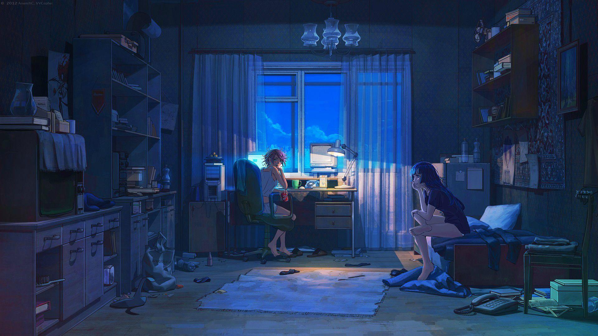

Space for
Deep
Work
StudyFocus är en lugn digital miljö som hjälper dig att komma in i flow: ställ in timer, håll fokus, minska distraktioner och få mer gjort med struktur.
For Students
Plugga i tydliga pass, minska distraktioner och följ din faktiska tid. Perfekt för prov och läxor.
For Digital Nomads
Kom in i djupfokus var som helst med ambient-känsla och fokusverktyg som hjälper dig bli klar snabbare.
For Everyone
Bygg bättre vanor, sluta doom-scrolla och ta tillbaka kontrollen över din uppmärksamhet.
Made for deep focus
Genomtänkta verktyg som hjälper dig hålla kursen, bygga momentum och se din utveckling – utan att vara i vägen.
Simple timer modes
Välj Pomodoro (t.ex. 25/5), egna pass eller stoppur. Byt läge efter uppgiften du jobbar med.
Focus sounds and music
Tagga pass per ämne, följ projekt och håll en enkel att-göra-lista på ett ställe.
Gentle insights
Välj ambient-ljud som hjälper dig stanna i zonen. Kombinera med dina rutiner för maximal koncentration.
Study with friends
Se mönster i hur du pluggar och jobbar. Hitta dina bästa tider och planera smartare över tid.
Distraction blocker
Blockera distraktioner under ett fokuspass. De kommer tillbaka när du tar paus.
Vanliga frågor
Svar på frågor vi ofta får.
Är StudyFocus gratis?
Ja. Grundfunktionerna är gratis. Vi kan lägga till premiumfunktioner senare.
Vilka enheter funkar det på?
Moderna webbläsare på desktop, iPad och iPhone. (Appen byggs också.)
Hur kan jag ge feedback?
Gå med i vår community och dela idéer, ställ frågor och hjälp oss förbättra.
Måste jag ha ett konto?
Nej. Du kan använda appen utan inloggning. Konto sparar data och kan låsa upp statistik.
